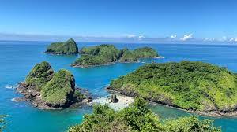
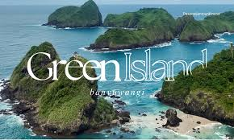
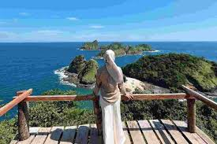
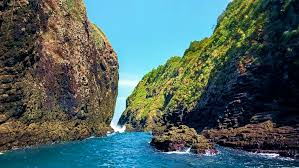
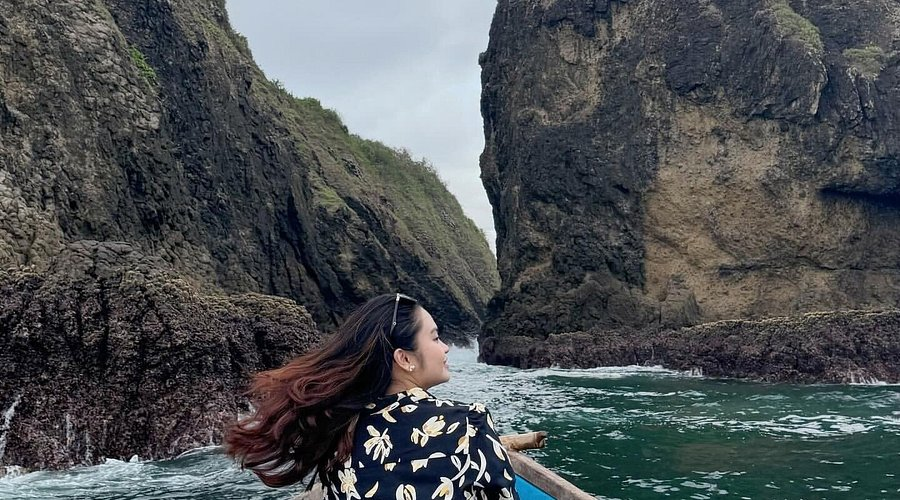

Green Island
Destinasi wisata alam "Raja Ampatnya Banyuwangi" dengan keindahan alam yang menawan dengan panorama indah
Galeri Foto





Informasi Detail
"Green Island Banyuwangi" merujuk pada destinasi wisata alam yang menawan di Kabupaten Banyuwangi. Terdapat dua lokasi utama yang sering dikaitkan dengan nama "hijau" di area tersebut: Pulau Hijau (Green Island) yang berdekatan dengan Pulau Bedil, dan Teluk Hijau (Green Bay) yang berada di Taman Nasional Meru Betiri.
Keunikan
- Lanskap "Dua Dunia" (Bukit dan Laut): Green Island menawarkan pengalaman unik di mana Anda bisa menikmati pemandangan laut lepas dari atas bukit.
- Spot Ikonik "Green Island Spot T": erdapat gundukan tanah yang menjorok ke laut, yang dikenal sebagai GREEN ISLAND SPOT T karena bentuknya menyerupai huruf 'T'
- Perairan yang Jernih dan Eksotis: Air lautnya sangat bersih dan jernih, memungkinkan kegiatan snorkeling dan freediving yang memuaskan untuk melihat terumbu karang dan biota laut.
Aktivitas yang Bisa Dilakukan
- Menikmati Pemandangan dari Puncak Kemuning (Trekking Ringan)
- Berfoto di Spot Ikonik
- Snorkeling dan Diving (Aktivitas Bahari)
- Bersantai dan Berjemur di Pantai
- Island Hopping
Info Praktis
- Lokasi: Dusun Pancer, Desa Sumberagung, Kecamatan Pesanggaran, Kabupaten Banyuwangi
- Biaya Masuk: Sekitar Rp 250.000 - Rp 350.000/rombongan untuk sewa perahu
- Waktu Terbaik Berkunjung: Pada saat musim kemarau, pagi hari atau saat air surut
- Transportasi: dapat di akses dengan kendaraan pribadi menuju pantai Mustika dan dilanjut menggunakan perahu nelayan untuk menuju ke Green Island
- Akomodasi:
Peraturan Kunjungan
- Wajib Menggunakan Pelampung saat Menyeberang
- Berhati-hati Saat Snorkeling/Berenang
- Dilarang Membuang Sampah
- Dilarang Merusak Terumbu Karang
- Dilarang Mengambil Flora dan Fauna
- Patuhi Pemandu Lokal
- Persiapan Mandiri
- Berhati-hati Saat Foto Khususnya di GREEN ISLAND SPOT T
- Jaga Kebersihan Area Puncak